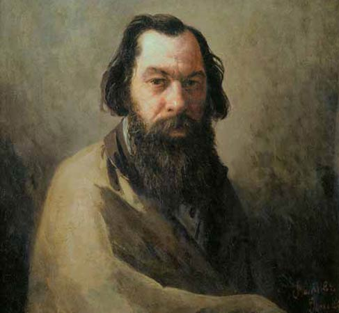

Алексей Саврасов
Картины этого русского художника уже отлично продавались, едва ему исполнилось 12 лет. Чуть позже он поступил в Московское училище живописи и мгновенно стал одним из лучших учеников. Поездка на Украину помогла Саврасову досрочно окончить училище и получить звание художника.
Картины «Камень в лесу» и «Московский Кремль» сделали из этого живописца академика в 24 года! Молодым талантом интересуется царская семья, а сам Третьяков покупает множество его работ для международных выставок. Среди них были «Зима», «Грачи прилетели», «Распутица» и другие.
Смерть двух дочерей и последующий развод сильно сказываются на Саврасове. Он много пьёт и вскоре умирает в больнице для бедных.